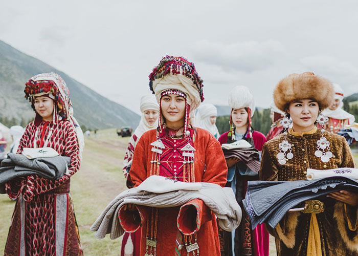
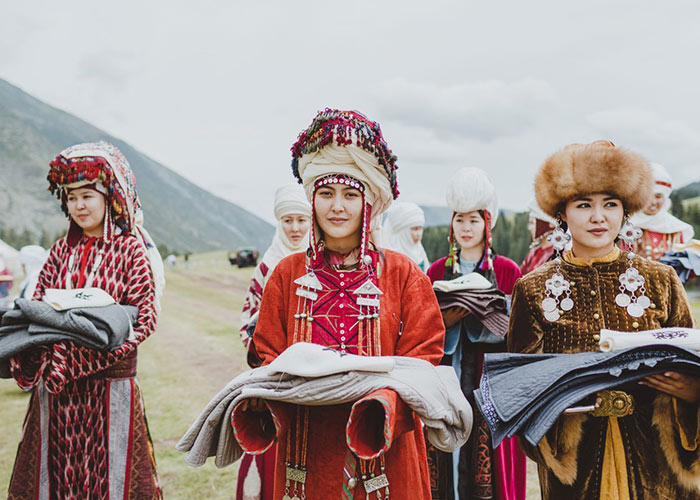

Kyrgyzstan is a country with fabulous and beautiful mountains, rich history, unusual culture and interesting traditions. this is a real a mountain paradise for climbers, climbers and travel enthusiasts. an amazing country of heavenly mountains is kyrgyzstan. peculiarity - clean air, crystal clear lakes, snowy spring water the peaks of the mountains are the nature of kyrgyzstan. This page introduces us to wonderful world. you get to know the geographic location, history of research, the Great Silk Road, geoecological position and sustainable development of the country. you can go to travel around kyrgyzstan and replenish your knowledge

 
